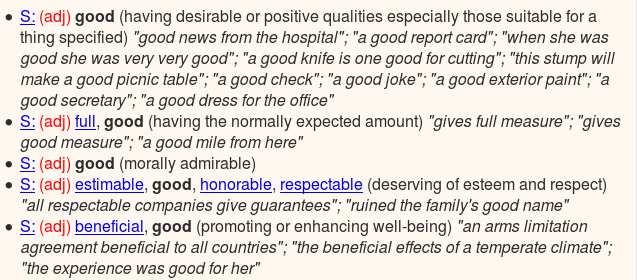
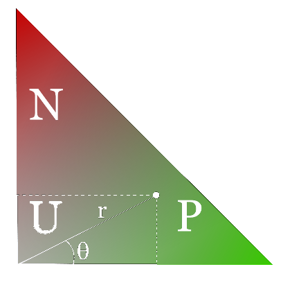

Valerio Basile
28/8/2015
Wimmics, INRIA
PhD at Groningen, NL
MSc at Bologna, Italy
Collection of 3+ years of Twitter messages in Italian language.
More than half a billion
784,211,691 tweets, and counting...
Seeds:
vita, Roma, forza, alla, quanto, amore,
Milano, Italia, fare, grazie, della, anche, periodo, bene,
scuola, dopo, tutto, ancora, tutti, fatto
il
è
come
Second step: langid
{"contributors": null, "truncated": false,
"text": "\"Si nasce in un posto, si prende una barca per arrivare dove
poter nascere ancora, \nsi mettono fiori\u2026
http://t.co/Cgn1nfOWVZ", "in_reply_to_status_id": null, "id":
451271120575283200, "favorite_count": 0, "source":
"Instagram",
"retweeted": false, "coordinates": null, "entities": {"symbols": [],
"user_mentions": [], "hashtags": [], "urls": [{"url":
"http://t.co/Cgn1nfOWVZ", "indices": [102, 124], "expanded_url":
"http://instagram.com/p/mR8JJ1C6V7/", "display_url":
"instagram.com/p/mR8JJ1C6V7/"}]}, "in_reply_to_screen_name": null,
"id_str": "451271120575283200", "retweet_count": 0,
"in_reply_to_user_id": null, "favorited": false, "user":
{"follow_request_sent": null, "profile_use_background_image": false,
"default_profile_image": false, "id": 276029690,
"profile_background_image_url_https":
"https://pbs.twimg.com/profile_background_images/774200821/b29332b24409bd98f380fb6356a6e5f7.jpeg",
"verified": false, "profile_image_url_https":
"https://pbs.twimg.com/profile_images/2653103820/4daecc232d0c1f50986717f1da2d4465_normal.jpeg",
"profile_sidebar_fill_color": "EFEFEF", "profile_text_color":
"333333", "followers_count": 362, "profile_sidebar_border_color":
"000000", "id_str": "276029690", "profile_background_color": "DE1D1D",
"listed_count": 2, "is_translation_enabled": false, "utc_offset":
7200, "statuses_count": 4071, "description": "profilo ufficiale di
maurizio montanino \r\namo la vita in ogni sua forma d'espressione, la
musica. cantare: rap/pop/electro funk. scrivere poesie.",
"friends_count": 729, "location": "genova-italy/on the road",
"profile_link_color": "579900", "profile_image_url":
"http://pbs.twimg.com/profile_images/2653103820/4daecc232d0c1f50986717f1da2d4465_normal.jpeg",
"following": null, "geo_enabled": false, "profile_banner_url":
"https://pbs.twimg.com/profile_banners/276029690/1358196165",
"profile_background_image_url":
"http://pbs.twimg.com/profile_background_images/774200821/b29332b24409bd98f380fb6356a6e5f7.jpeg",
"name": "maurizio montanino", "lang": "it", "profile_background_tile":
true, "favourites_count": 1747, "screen_name": "maui974",
"notifications": null, "url": "http://BLOG.libero.it/MUSIConBLOG",
"created_at": "Sat Apr 02 14:11:55 +0000 2011",
"contributors_enabled": false, "time_zone": "Rome", "protected":
false, "default_profile": false, "is_translator": false}, "geo": null,
"in_reply_to_user_id_str": null, "possibly_sensitive": false, "lang":
"it", "created_at": "Wed Apr 02 08:13:14 +0000 2014", "filter_level":
"medium", "in_reply_to_status_id_str": null, "place": null}
Rich structure.
Based on words and synsets

MultiWordNet ↔ WordNet ↔ SentiWordNet
buono a 00631391 0.625 0 1.0 0.625
buono a 00633410 0.625 0.125 0.748668167244 0.637377439199
buono a 01123148 0.75 0 1.0 0.75
buono a 01129977 1 0 1.0 1.0
buono a 01372049 0.625 0 1.0 0.625
buono a 01800349 0.625 0.125 0.748668167244 0.637377439199
buono a 01983162 1 0 1.0 1.0
buono n 04849241 0.875 0 1.0 0.875
buono n 05142180 0.625 0 1.0 0.625
buono n 06518068 0.125 0 1.0 0.125
buono n 10138767 0.375 0 1.0 0.375
buono n 10138767 0.375 0 1.0 0.375
cattivo a 01125429 0 0.625 -1.0 0.625
cattivo a 01131043 0 0.875 -1.0 0.875
cattivo n 09831856 0 0.25 -1.0 0.25
cattivo n 09831962 0 0.125 -1.0 0.125
cattivo n 10753546 0 0.375 -1.0 0.375
cattivo n 10753546 0 0.375 -1.0 0.375
cattivo n 10753546 0 0.375 -1.0 0.375
cattivo n 10753779 0 0.25 -1.0 0.25
cattivo n 10753779 0 0.25 -1.0 0.25

| part-of-speech | lemmas | synsets |
|---|---|---|
| noun | 52,257 | 12,228 |
| adjective | 3,359 | 1,805 |
| verb | 2,775 | 1,260 |
| adverb | 1,351 | 750 |
| all | 59,742 | 16,043 |
Ho fatto un casino, devo rimediare
I screwed up, I have to fix
fare v 00322847 0.125 0 1.0 0.125
fare v 01733477 0.125 0 1.0 0.125
fare v 01060494 0.25 0 1.0 0.25
fare v 01759326 0.25 0.25 0.0 0.353553390593
fare v 02109045 0.25 0 1.0 0.25
casino n 00075618 0 0.5 -1.0 0.5
casino n 05687338 0 0.25 -1.0 0.25
casino n 07390945 0 0.25 -1.0 0.25
casino n 13777509 0 0.25 -1.0 0.25
casino n 14500047 0 0.125 -1.0 0.125
casino n 14500047 0 0.125 -1.0 0.125
dovere v 00065370 0 0.75 -1.0 0.75
dovere v 00065370 0 0.75 -1.0 0.75
dovere v 01189113 0 0.25 -1.0 0.25
rimediare v 02519991 0 0.125 -1.0 0.125
Ho fatto un casino, devo rimediare
I screwed up, I have to fix
fare: 0.2/0.05
casino: 0/0.25
dovere: 0/0.58
rimediare: 0/0.125
TOTAL: 0.2/1.01 → Negative
Experiments on a 2,000 tweets gold standard: three-way classification.
All combinations of POS-tags + polypathy filter.
Best accuracy: 55.4% (51.4% on topic-specific set).
Adverbs only + polypathy strategy wins.
V. Basile and M. Nissim
Sentiment Analysis on Italian Tweets
Proceedings of the 4th Workshop on Computational Approaches to Subjectivity, Sentiment and Social Media Analysis
Shared Task at EVALITA 2014
3 subtasks, 2 runs
Subjectivity
subjective/objective
Polarity
neutral/positive/negative/mixed
Irony (pilot task)
ironic/not ironic
| subj | pos | neg | iro | interpretation |
|---|---|---|---|---|
| 0 | 0 | 0 | 0 | objective |
| 1 | 0 | 0 | 0 | subjective |
| 1 | 1 | 0 | 0 | positive |
| 1 | 0 | 1 | 0 | negative |
| 1 | 1 | 1 | 0 | mixed polarity |
| 1 | 1 | 0 | 1 | positively ironic |
| 1 | 0 | 1 | 1 | negative ironic |
2 sources: SentiTUT (Turin), TWITA (Groningen)
2 subsets: general, topic-specific (politics)
4,513 (training set) + 1,935 (test set) = 6,448 tweets
Difficult task for humans! (k=0.35 for Task 3)
F-score
| team | task 1 | task 2 | task 3 | const. | uncost. | const. | uncost. | const. | uncost. |
|---|---|---|---|---|---|---|
| uniba2930 | 0.714 | 0.689 | 0.677 | 0.663 | ||
| UNITOR | 0.687 | 0.689 | 0.629 | 0.654 | 0.575 | 0.595 |
| IRADABE | 0.670 | 0.646 | 0.634 | 0.618 | 0.541 | 0.551 |
| UPFtaln | 0.649 | 0.604 | 0.468 | |||
| ficlit+cs@unibo | 0.597 | 0.598 | ||||
| mind | 0.590 | 0.534 | 0.477 | |||
| SVMSLU | 0.582 | 0.602 | 0.539 | |||
| fbkshelldkm | 0.559 | 0.562 | 0.470 | |||
| itagetaruns | 0.522 | 0.518 | 0.492 | |||
| Itanlp-wafi | 0.663* | |||||
| baseline | 0.400 | 0.371 |
V. Basile, A. Bolioli, M. Nissim, V. Patti and P. Rosso
Overview of the Evalita 2014 SENTIment POLarity Classification Task
Proceedings of the 4th evaluation campaign of Natural Language Processing and Speech tools for Italian (EVALITA'14)
Entity Linking
il profilo nuovo fa schifo.tutto quel bianco mi fa vomitare.ed è la copia di facebook.ma *****o.
Aspect-based Sentiment Analysis
Tristezza, quando vedi ancora gente che odia i tedeschi per il loro "passato". Credevo che l'ignoranza e i pregiudizi ormai fossero estinti
Figurative language: metaphore, simile, sarcasm, ...
P. Basile, V Basile, M. Nissim and N. Novielli
Deep Tweets: from Entity Linking to Sentiment Analysis
(unpublished)